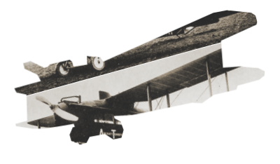

Дело помощи утопающим — дело рук самих утопающих! Шахматы двигают вперед не только культуру, но и экономику! Лед тронулся, господа присяжные заседатели! Дело помощи утопающим — дело рук самих утопающих! Шахматы двигают вперед не только культуру, но и экономику! Лед тронулся, господа присяжные заседатели! Дело помощи утопающим — дело рук самих утопающих! Шахматы двигают вперед не только культуру, но и экономику! Лед тронулся, господа присяжные заседатели! Дело помощи утопающим — дело рук самих утопающих! Шахматы двигают вперед не только культуру, но и экономику! Лед тронулся, господа присяжные заседатели!
Чтобы поддержать
Международный васюкинский
турнир, посетите лекцию на тему:
«Плодотворная дебютная идея»
и Сеанс одновременной игры в
шахматы на 160 досках
гроссмейстера О. Бендера
| Место проведения: | Клуб «Картонажник» |
| Дата и время мероприятия: | 22 июня 1927 г. в 18:00 |
| Стоимость входных билетов: | 20 коп. |
| Плата за игру: | 50 коп. |
| Взнос на телеграммы: | 100 руб.21 руб. 16 коп. |
ЭТАПЫ ПРЕОБРАЖЕНИЯ
1
Строительство железнодорожной магистрали Москва-Васюки
2
Открытие фешенебельной гостиницы «Проходная пешка» и других небоскрёбов
3
Поднятие сельского хозяйства в радиусе на тысячу километров: производство овощей, фруктов, икры, шоколадных конфет
4
Строительство дворца для турнира
5
Размещение гаражей для гостевого автотранспорта
6
Постройка сверхмощной радиостанции для передачи всему миру сенсационных результатов
7
Создание аэропорта «Большие Васюки» с регулярным отправлением почтовых самолётов и дирижаблей во все концы света, включая Лос-Анжелос и Мельбурн
